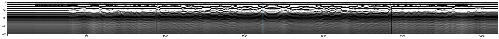
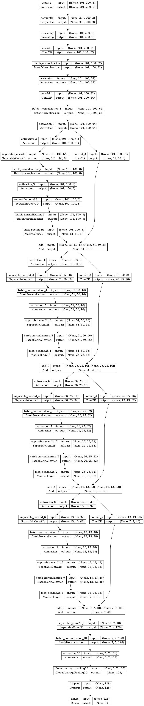
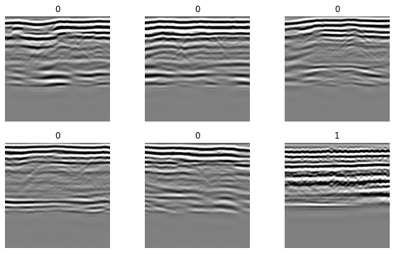
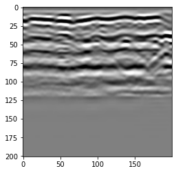
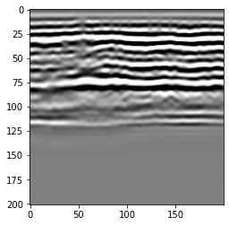
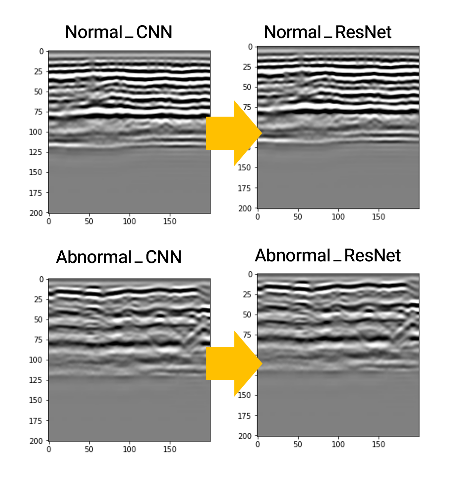

🪢 데이터 출처
https://github.com/rpl-cmu/CMU-GPR-Dataset
📌프로젝트 개요
- 학부과정에서 배웠던 CNN모델로 이미지 분류를 시도해보고자 함.
- 그레이스케일 이미지가 처음 시도해보기에 적합할 듯 싶어 구글링 → 그래프의 파동이 그레이스케일로 잘 표현될 것 같다고 판단하여 GPR 이미지 시도
1. GPR 이미지 시각화
2. CNN 모델 정의
3. 추론 + ResNet 모델로 학습해보기
1. 데이터 확인
- GPR: 전자파 → 지면에 방출시켜서 → 되돌아오는 반사파를 기록한 데이터.
GPR 데이터셋: GPR 센서의 측정 결과, 측정 위치를 레이블링 함. - 지하에 물질이 다른게 있다? ⇒ 반사파 형태가 달라짐.
- 뭐가 있는지는 적혀져 있는거 아님.
-
코드_데이터 불러오기
python df = pd.read_csv("gpr_meas.csv", index_col=0) df.head()Amp_0 Amp_1 Amp_2 Amp_3 Amp_4 Amp_5 Amp_6 Amp_7 Amp_8 Amp_9 ... Amp_191 Amp_192 Amp_193 Amp_194 Amp_195 Amp_196 Amp_197 Amp_198 Amp_199 Amp_200 Time[s] 1.613064e+09 -17.0 -45.0 -95.0 -93.0 144.0 272.0 -178.0 14.0 2119.0 8765.0 ... -102.0 -121.0 -140.0 -147.0 -144.0 -153.0 -143.0 -86.0 -142.0 1.613064e+09 0.0 -56.0 -136.0 -58.0 131.0 226.0 -172.0 65.0 2456.0 7835.0 ... -104.0 -147.0 -162.0 -173.0 -129.0 -120.0 -97.0 -148.0 -121.0 1.613064e+09 -67.0 -117.0 -194.0 -107.0 129.0 129.0 -258.0 491.0 3304.0 8575.0 ... -189.0 -252.0 -258.0 -233.0 -226.0 -208.0 -168.0 -181.0 -168.0 1.613064e+09 -34.0 -87.0 -149.0 -83.0 99.0 221.0 -221.0 256.0 2725.0 8815.0 ... -167.0 -201.0 -203.0 -202.0 -170.0 -187.0 -133.0 -148.0 -166.0 1.613064e+09 -63.0 -77.0 -151.0 -112.0 139.0 222.0 -127.0 169.0 2184.0 8446.0 ... -174.0 -169.0 -223.0 -263.0 -223.0 -208.0 -188.0 -190.0 -209.0 - 기초 통계량 확인: df.describe()Amp_0 Amp_1 Amp_2 Amp_3 Amp_4 Amp_5 Amp_6 Amp_7 Amp_8 Amp_9 ... Amp_191 Amp_192 Amp_193 Amp_194 Amp_195 Amp_196 Amp_197 Amp_198 Amp_199 Amp_200 count 3100.000000 3100.000000 3100.000000 3100.000000 3100.000000 3100.000000 3100.000000 3100.0000 3100.000000 3100.000000 ... 3100.000000 3100.000000 3100.000000 3100.000000 3100.000000 3100.000000 3100.000000 3100.000000 3100.000000 mean 8.293226 -33.916774 -104.092258 -107.942903 41.350323 268.614194 19.322581 -88.1200 1393.509355 6038.399355 ... -69.886452 -75.011613 -83.388065 -91.415484 -101.865806 -114.988387 -128.113226 -138.872581 -149.500968 std 82.105934 80.732070 73.444251 60.575467 49.378276 31.280928 121.908171 229.0322 624.852776 1145.671881 ... 92.647462 94.478531 95.802078 96.770939 96.807651 97.504880 99.857619 99.864136 99.245506 min -710.000000 -738.000000 -714.000000 -502.000000 -93.000000 107.000000 -514.000000 -1131.0000 -600.000000 2448.000000 ... -773.000000 -816.000000 -777.000000 -806.000000 -791.000000 -807.000000 -837.000000 -835.000000 -827.000000 25% -43.000000 -84.000000 -151.000000 -147.000000 7.000000 251.000000 -46.000000 -196.0000 1050.000000 5359.500000 ... -128.000000 -136.000000 -147.000000 -152.000000 -159.000000 -170.000000 -187.000000 -200.250000 -210.000000 50% -4.000000 -48.000000 -116.000000 -116.000000 34.000000 269.000000 44.000000 -50.0000 1356.000000 5985.500000 ... -83.000000 -91.000000 -98.000000 -106.000000 -116.000000 -128.000000 -137.000000 -146.000000 -156.000000 75% 43.000000 3.000000 -71.000000 -80.000000 69.000000 287.000000 106.000000 56.0000 1681.250000 6621.250000 ... -21.000000 -20.000000 -28.000000 -41.750000 -56.000000 -73.000000 -85.000000 -95.000000 -104.000000 max 365.000000 307.000000 228.000000 170.000000 262.000000 552.000000 377.000000 1810.0000 6721.000000 13401.000000 ... 297.000000 290.000000 297.000000 286.000000 317.000000 322.000000 337.000000 290.000000 247.000000
→ 뭐가 많음… 이게 뭔지 확인 !
8 rows × 201 columns
📌 200개의 반사된 주파수의 “시간별 진폭”이 저장된 것.
0번째 시간의 진폭, 1번째 시간의 진폭… 200번째 시간의 진폭
- 몇개만 뽑아서 시간에 따른 값 변화를 표시해서 확인
df[['Amp_0','Amp_10', 'Amp_100']].plot(grid='on')

→ 주황색(10): 급격하게 떨어지는 부분 있음. 지하에 뭔가 있다는 의미!
→ 초록색(100), 파란색(0): 미미하지만 파동이 달라지고 있음.
⇒ 시간에 따른 값을 표기할 수 있으니 이걸 이미지로 변환할 수 있을 것. (초음파 사진처럼)
➡️ 1. df 변환
df.values: 전체 컬럼을 matrix로 변환
→ y축이 시간임. 아래로 길어서 보기 힘들듯.
df.values.T로 가로로기이이이이이이일게 만들기
➡️ 2. 정규화: min-max normalization
(vmax, vmin) = (2500, -1000)
norm_img = (image_like_data - vmin)/(vmax-vmin)
# -> 이렇게만 진행하면 최대/최소값을 넘어가는 애들도 있어서
# np.clip으로 1로 만들어주기
clipped_img = np.clip(0,1, norm_img)
➡️ 3. 이미지로 변환해서 출력해보기
-
코드
python plt.figure(figsize=(32, 4)) plt.imshow(clipped_img, cmap='gray', vmax=1, vmin=0.0) plt.axvline(x=1615) # 파동이 달라지는 부분 표시(파란색 선) plt.tight_layout()

💡 영상 분류를 위한 레이블링 이미지셋 → CNN 모델 학습 → 평가
2. CNN 모델 설계
-
코드
```python
import tensorflow as tf
from tensorflow import keras
from tensorflow.keras import layersimage_size = (201, 200)
batch_size = 8
seed = 9721```
abnormal GPR 100장, normal GPR 100장이라서, 아무리 토이 프로젝트라 해도 이미지가 적기 때문에 augmentation으로 양을 늘려주려고 함.
Augmentation
data_augmentation = keras.Sequential(
[
layers.RandomFlip(mode='horizontal'),
]
)
- Xception network 이용 → https://maelfabien.github.io/deeplearning/xception/#what-does-it-look-like
(수업시간에 언급하셨던 모델 중 하나라 궁금해서 사용해봄)
def make_model(input_shape, num_classes):
inputs = keras.Input(shape=input_shape)
# 이미지 augmentation 설정
x = data_augmentation(inputs)
# 초기 레이어 설정
x = layers.Rescaling(1.0 / 255)(x)
x = layers.Conv2D(32, 3, strides=2, padding="same")(x)
x = layers.BatchNormalization()(x)
x = layers.Activation("relu")(x)
x = layers.Conv2D(64, 3, padding="same")(x)
x = layers.BatchNormalization()(x)
x = layers.Activation("relu")(x)
previous_block_activation = x # residual 설정
for size in [8, 16, 32, 48]:
x = layers.Activation("relu")(x)
x = layers.SeparableConv2D(size, 3, padding="same")(x)
x = layers.BatchNormalization()(x)
x = layers.Activation("relu")(x)
x = layers.SeparableConv2D(size, 3, padding="same")(x)
x = layers.BatchNormalization()(x)
x = layers.MaxPooling2D(3, strides=2, padding="same")(x)
# Project residual
residual = layers.Conv2D(size, 1, strides=2, padding="same")(
previous_block_activation
)
x = layers.add([x, residual]) # back residual 설정
previous_block_activation = x # next residual 설정
x = layers.SeparableConv2D(128, 3, padding="same")(x)
x = layers.BatchNormalization()(x)
x = layers.Activation("relu")(x)
x = layers.GlobalAveragePooling2D()(x)
if num_classes == 2:
activation = "sigmoid"
units = 1
else:
activation = "softmax"
units = num_classes
x = layers.Dropout(0.5)(x)
outputs = layers.Dense(units, activation=activation)(x)
return keras.Model(inputs, outputs)
model = make_model(input_shape=image_size + (3,), num_classes=2)
keras.utils.plot_model(model, show_shapes=True)
-
plot_model 확인

3. 모델 학습
!ls data/labeled
abnormal normal
→ abnoraml, normal 있는 것 확인
- 클래스별로 폴더를 나누어놨음. → keras에서 학습에 필요한 데이터셋 만드는 기능 활용
💡 tf.keras.preprocessing.image_dataset_from_directory()
: 클래스별 폴더가 있을 경우 데이터셋 만드는 메서드
train_ds = tf.keras.preprocessing.image_dataset_from_directory(
"./data/labeled",
validation_split=0.1,
subset="training",
seed=seed,
image_size=image_size,
batch_size=batch_size,
)
val_ds = tf.keras.preprocessing.image_dataset_from_directory(
"./data/labeled",
validation_split=0.1,
subset="validation",
seed=seed,
image_size=image_size,
batch_size=batch_size,
)
Found 200 files belonging to 2 classes.
Using 180 files for training.
Found 200 files belonging to 2 classes.
Using 20 files for validation.
-
잘 나뉘었는지 확인: 학습셋 이미지 출력
python plt.figure(figsize=(10, 6)) for images, labels in train_ds.take(1): for i in range(6): ax = plt.subplot(2, 3, i + 1) plt.imshow(images[i].numpy().astype("uint8")) plt.title(int(labels[i])) plt.axis("off")

0: 정상이다 1: 뭔가 있다
모델 학습시키기
epochs = 30
# callback 먼저 정의하기
callbacks = [
# 가장 결과가 좋은 모델을 best.h5로 저장하기
keras.callbacks.ModelCheckpoint("./models/best.h5", save_best_only=True, monitor='val_loss'),
# 학습 과정에서 개선이 없으면 lr 조정하기
keras.callbacks.ReduceLROnPlateau(monitor='val_loss', factor=0.1, patience=10, verbose=0, mode='auto', min_delta=0.0001, cooldown=0, min_lr=0),
]
# compile
model.compile(
optimizer=keras.optimizers.Adam(1e-3),
loss = 'binary_crossentropy',
metrics = ['accuracy'],
)
# 모델 학습
model.fit(
train_ds, epochs = epochs, callbacks = callbacks, validation_data = val_ds,)
4. 모델 추론
학습된 모델 파일을 로드해서 샘플 이미지를 추론하기
: 학습을 통해 만들어진 모델을 → 실제로 새로운 입력 데이터에 적용하여 결과를 내놓는 단계
💡 1. 가장 학습 결과 좋은 모델 불러오기
2. 정상 이미지, 비정상이미지 불러오기
3. 이미지를 predict를 수행해서 확인
-
코드
```python
model = tf.keras.models.load_model("./models/best.h5")정상, 비정상 불러오기
normal_img = keras.preprocessing.image.load_img(
"./data/labeled/normal/1613059433_516002_X_2.3793_Y_-35.1849_T_odom_20.8377_dir_-1.0_0.png", target_size=image_size
)
abnormal_img = keras.preprocessing.image.load_img(
"./data/labeled/abnormal/1613059614_8893247_X_12.9562_Y_-44.8245_T_odom_35.5064_dir_-1.0_0.png", target_size=image_size
)해당 이미지들 predict 수행
def predict_and_show(img):
img_array = keras.preprocessing.image.img_to_array(img)
img_array = tf.expand_dims(img_array, 0) # Create batch axispredictions = model.predict(img_array) score = predictions[0] # print(score) print( "This image is %.2f percent abnormal and %.2f normal." % (100 * (1 - score), 100 * score)) plt.figure() plt.imshow(img, cmap='gray')predict_and_show(normal_img)
predict_and_show(abnormal_img)
```
1/1 [==============================] - 0s 271ms/step
This image is 0.57 percent abnormal and 99.43 normal.
1/1 [==============================] - 0s 23ms/step
This image is 99.97 percent abnormal and 0.03 normal.


💡 normal 결과: abnormal 0.57, normal 99.43
abnormal 결과: abnoraml 99.97, noraml 0.03
→ 잘 분류 됨.
4. ResNet 모델
from tensorflow import Tensor
from tensorflow.keras.layers import Input, Conv2D, ReLU, BatchNormalization, AveragePooling2D, Flatten, Dense
from tensorflow.keras.models import Model
def relu_bn(inputs: Tensor) -> Tensor:
relu = ReLU()(inputs)
bn = BatchNormalization()(relu)
return bn
def residual_block(x: Tensor, downsample: bool, filters: int, kernel_size: int = 3) -> Tensor:
y = Conv2D(kernel_size=kernel_size,
strides= (1 if not downsample else 2),
filters=filters,
padding="same")(x)
y = relu_bn(y)
y = Conv2D(kernel_size=kernel_size,
strides=1,
filters=filters,
padding="same")(y)
if downsample:
x = Conv2D(kernel_size=1,
strides=2,
filters=filters,
padding="same")(x)
out = layers.add([x, y])
out = relu_bn(out)
return out
def make_resnet(input_shape, num_classes):
num_filters = 4
inputs = keras.Input(shape=input_shape)
# Image augmentation block
x = data_augmentation(inputs)
# Entry block
x = layers.Rescaling(1.0 / 255)(x)
x = BatchNormalization()(x)
x = Conv2D(kernel_size=3,
strides=1,
filters=num_filters,
padding="same")(x)
x = relu_bn(x)
num_blocks_list = [2, 5, 5, 2]
for i in range(len(num_blocks_list)):
num_blocks = num_blocks_list[i]
for j in range(num_blocks):
x = residual_block(x, downsample=(j==0 and i!=0), filters=num_filters)
num_filters *= 2
x = layers.GlobalAveragePooling2D()(x)
if num_classes == 2:
activation = "sigmoid"
units = 1
else:
activation = "softmax"
units = num_classes
x = layers.Dropout(0.5)(x)
outputs = layers.Dense(units, activation=activation)(x)
return keras.Model(inputs, outputs)
resnet_model = make_resnet(input_shape=image_size + (3,), num_classes=2)
epochs = 20
callbacks = [
keras.callbacks.ModelCheckpoint("./models/resnet_best.h5", save_best_only=True, monitor='val_loss'),
keras.callbacks.ReduceLROnPlateau(monitor='val_loss', factor=0.1, patience=5, verbose=0, mode='auto', min_delta=0.00001, cooldown=0, min_lr=0),
]
resnet_model.compile(
optimizer=keras.optimizers.Adam(1e-3),
loss="binary_crossentropy",
metrics=["accuracy"],
)
resnet_model.fit(
train_ds,
epochs=epochs,
callbacks=callbacks,
validation_data=val_ds,
)
- 샘플 이미지 추론하기
같은 방법으로 결과 제일 좋은거 모델 불러오고, 정상+비정상 이미지 불러오고, 이미지들을 가장 좋은 모델에 넣어 predict를 수행해서 score확인
resnet_model = tf.keras.models.load_model("./models/resnet_best.h5")
normal_img = keras.preprocessing.image.load_img(
"./data/labeled/normal/1613059433_516002_X_2.3793_Y_-35.1849_T_odom_20.8377_dir_-1.0_0.png", target_size=image_size
)
abnormal_img = keras.preprocessing.image.load_img(
"./data/labeled/abnormal/1613059614_8893247_X_12.9562_Y_-44.8245_T_odom_35.5064_dir_-1.0_0.png", target_size=image_size
)
def predict_and_show(img):
img_array = keras.preprocessing.image.img_to_array(img)
img_array = tf.expand_dims(img_array, 0) # Create batch axis
predictions = resnet_model.predict(img_array)
score = predictions[0]
print( "This image is %.2f percent abnormal and %.2f normal." % (100 * (1 - score), 100 * score))
plt.figure()
plt.imshow(img, cmap='gray')
predict_and_show(normal_img)
predict_and_show(abnormal_img)
1/1 [==============================] - 0s 450ms/step
This image is 4.07 percent abnormal and 95.93 normal.
1/1 [==============================] - 0s 30ms/step
This image is 93.03 percent abnormal and 6.97 normal.



선의 굵기를 보면 미세하게 달라짐. abnormal로 비교해보면 ResNet이 더 뚜렷하게 구분하는 것을 확인함.
💡깨달은 점
- 직접 딥러닝 모델을 가져와서 구현하는 시간이 오래 걸렸음. 아직 딥러닝 모델에 대해 익숙하지 않다는 뜻이기 때문에, 여러개를 더 접해서 익숙해질 필요가 있음.
- CNN을 구현하는 것은 배웠던 거라서 어렵지 않았지만, 무작정 레이어를 쌓는다고 해서 좋은 것은 아니고, 레이어를 쌓는거에 따라 딥러닝 모델이 달라지니까 단순히 레이어만 쌓는 것보다는 CNN기반 딥러닝 모델에 대해 파악해보는 것이 좋을 듯.
- 도메인에 대한 이해도도 절대 무시할 수 없는 것을 체감함. 물론 이 데이터는 파동이라서 쉽게 이미지로 인식을 해서 가능했지만, 다른 데이터라면 이해하고 친숙해지는데 시간이 좀 더 오래 걸렸을 것 같음.
- 하나의 딥러닝 모델을 구현해봤으니, 방법을 알았음. 이제 다른 딥러닝 모델에 대해 논문을 읽어보고 구조를 파악한 뒤 직접 구현해보는 게 좋은 공부 방법일 듯.